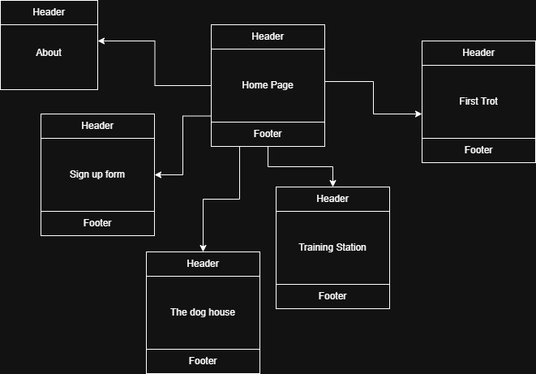

Project Overview: Raising Canines
The proposed aplication 'Rasing Canines' is a hoppyist / instructinal page that will provide information on raising dogs. Specific breeds and or accomidations will be mentioned however the goal is to include all dog owners. The sitwe will go over popular breeds and their do's and don'ts as well as activities to strengthen pet bonds. Also what to do if your pet is sick or exhibiting unorthodox behaviors.
Recommeneded Users:
- Users who have / want pets (dogs)
- Users who want to learn about dogs
Client Information
- Tiffany M Johnson
- Animal care hobbiest
- [redacted]
- [redacted]
Website WireFrame: Default Page

Site Map

Page Design
- Home Page
- To be an entry / landing page for the site, all audiences welcome
- The content will be a slideshow of dogs alomng with a short discription of the site and its pages. Header and footer will also be included, no data will be asked for on this page. This page will have hyperlinks as navigation to other pages a slideshow element will alo be featured.
- First Trot
- To be an intro duction to dog raising including preperations vbefore buying and first week activities. Some breeds and dogs may also need special care, special information will also be included. All audiances welcome
- The content on this page will be laid out like a timeline starting from before the adoption of a dog wo at least a week into ownership. Pictures will be present that can be clicked on to reveal a paragraph with information on what the user should do. The only form of intractability on the page will be through these images no data or internal links other than the nav bar.
- Training Station
- A page on training dogs behaviorally, all users welcome, no data will be needed
- This page will be about dog training, the best practices for most breeds and some special cases. This page will include citations to references that are used in the training of dogs. No actions will take place on this page.
- The Dog House
- A page for tips on housing dogs where their bed should be or wether or not they should be outside. All users welcome, no user input needed.
- This page will discuss information on dogs in the house how to deal with ripped up objects and or potty training as well as how to handle going to work and times when the dog will be alone.
- Sign up Page